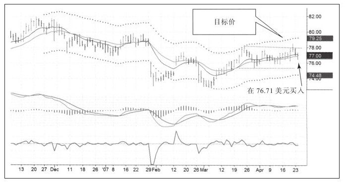
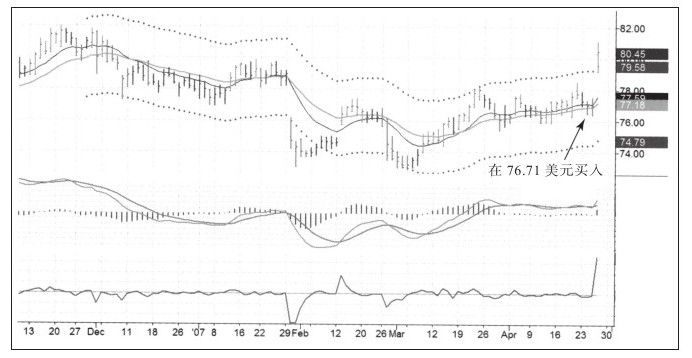
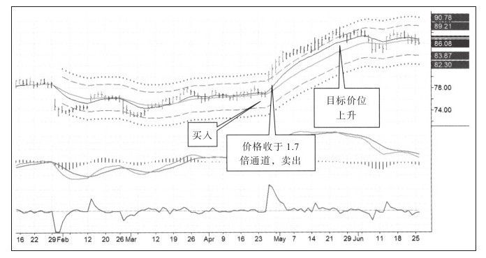

克里·劳文特别喜欢使用追踪止损，他的方法是，只要价格对自己有利就一直持有，一旦价格从最高或最低点回调就立即出局。
我使用追踪止损的次数不多，大多数时候用目标位出局的方法。虽然到达目标位时必须出场，但有时市场看起来还会给予我更多的回报。当价格到达止盈价时我就有了选择，我可以高兴地获利了结并展开下一笔交易，但有时可能由于盈利目标太保守而丢掉了后面潜在的利润。我不想把一次交易的所有利润都回吐，所以我准备使用部分仓位做追踪止损来看看这种方法会不会给我带来更多利润，基于我愿意回吐多少利润来做这个实验。追踪止损所面临的挑战与其他止损方法一样——止损设在哪里？如果设得太近可能很快就止损出局了。
一旦市场上涨，就可能涨到我们无法想象的高度，面对这样的问题我们可以通过设置追踪止损的方法让市场决定它会走多远以及我们何时出局。
我对追踪止损的看法是：如果市场愿意给我更多，我非常乐意寻找追踪止损点，我认为就价格而言我必须为这种方法埋单。追踪止损的方法和刚开始交易时的计算方法相似，权衡风险收益关系，问题也相同：我愿意损失多少？一旦决定使用追踪止损，那么计划就已经制定好了，然后其他的就都交给市场。
我所使用追踪止损的方法是波幅减少法。如果市场即将疯狂并大幅移动，我自然愿意留在市场中。我使用通道设置价格目标，通道宽度的正常值是2.7倍标准差。如果我想在价格达到目标价以后使用追踪止损，我会把止损设在1.7倍标准差的地方，只要价格继续沿着正常通道运动我就一直持有，但只要收盘价在1.7倍标准差这个通道内我就离场。通道宽度可以用修改通道参数的方法来修改。
如何决定在价格达到盈利目标时是获利了结还是使用追踪止损？
如果价格到达盈利目标并且看到顶背离信号，我就不用追踪止损；只要看到不利的价格运动，比如长上影伴随巨大的成交量，我会在盈利目标位获利了结；如果市场运行良好，并且底部一次比一次高，我就使用追踪止损方法。在价格到达盈利目标后，只有看到足够积极的价格信号我才会使用追踪止损。
盈利目标转换为追踪止损的使用频率是多少？
我在2/3的交易中都使用这种方法，但用得不是很好。有时候刚刚设定了追踪止损，5分钟后就被扫出局。大约有一半时间追踪止损法给我带来比原先更多的利润，大的获益极少，主要来自大行情中。
和其他工具一样，追踪止损并不适合每个人，但有助于决策制定。这种方法给那些在获利出局和继续持有之间摇摆不定的人带来福音，使用这种方法就是把你从决策制定中解放出来，让市场决定去留，这也是我使用这种方法的另一个原因。
图5-17是一次交易的插图，周线图（没有显示）的趋势不明显，日线走势图中价格在很窄的区间内运动，我把这种模式称为“拥挤游戏”并准备在突破区间时交易。MACD柱的近期峰值让我看到有可能向上突破，于是我就在区间内做了多单。

在入场后两天，股价猛烈上涨并很快到达我的盈利目标位80.63美元（如图5-18所示）。多头非常强劲，整根K线都在上轨之上，我立即转为使用追踪止损并调出第二套通道系统，也就是1.7倍标准差的通道系统，我的计划是在收盘价跌到第二套通道系统内的时候卖出（如图5-19所示）。


股价沿着一条直线上涨了好几个星期才展开回调，收盘价跌到通道内的时候我卖出了这只股票，我是在5月24日以87.29美元卖出的，利润比原定的80.63美元盈利目标有了很大的提升。从入场到出场，整个通道的宽度变化非常大，因为通道是用100根K线的价格变动标准差来计算的，所以如果市场波动幅度加大通道将变宽。
克里的波幅减少策略是个非常有用的工具，它还能发出重要的信息。追踪止损只适用于特定时期，当市场平淡无奇地运动时，交易者最好使用最初的盈利目标和止损方法，当市场强烈运动时，交易者才可以使用追踪止损策略。